수학의 기초 | 2. 미분과 적분
1 미분
세상에 정지해 있는 것은 없다. 지구는 자전 속도 약 시속 1,660km, 공전 속도 약 시속 107,500km로 끊임없이 움직인다. 코페르니쿠스의 지동설을 갈릴레오와 케플러가 관측으로 뒷받침했고, 뉴턴은 “왜 달은 떠 있고 사과는 떨어지는가?”라는 질문에서 만유인력을 정립했다.
미분은 이러한 변화의 순간을 정량적으로 포착하는 도구다. 거리의 변화는 속도로, 속도의 변화는 가속도로, 경제학에서는 한계비용·한계효용으로 나타난다. 통계학에서는 회귀계수 추정(OLS), 최대우도법(MLE), 베이지안 추정 등 목적함수의 최적값을 구하는 핵심 수단이다.
1.1 평균변화율 (Average Rate of Change)
구간 \([a, b]\)에서 함수 \(f\)의 평균변화율은 두 점을 잇는 할선(secant line)의 기울기이다.
\[\text{평균변화율} = \frac{\Delta y}{\Delta x} = \frac{f(b) - f(a)}{b - a}\]
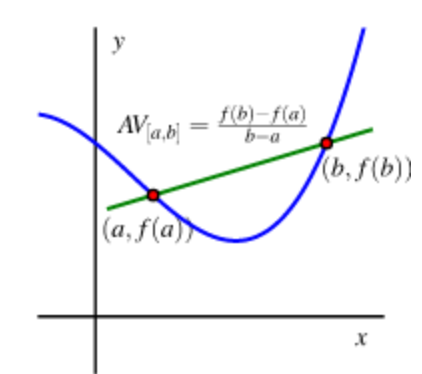
- 구간 단속 (평균변화율 응용): 구간 거리 6km를 2분에 통과 → 평균속도 = \(\frac{6}{2} = 3\,\text{km/min} = 180\,\text{km/h}\) → 과속
- 지점 단속 (미분 응용): 특정 지점에서의 순간 속도 측정
1.2 미분의 정의
함수 \(f(x)\)의 점 \(x = a\)에서의 미분값(도함수값) \(f'(a)\)는 다음과 같이 정의된다.
\[f'(a) = \lim_{h \to 0} \frac{f(a+h) - f(a)}{h}\]
\(\dfrac{f(a+h)-f(a)}{h}\)를 Fermat’s Difference Quotient라 하며, 평균 변화율을 나타낸다. 극한이 존재하면 \(f'(a)\)는 \(x=a\)에서 곡선의 접선 기울기이다.
| 개념 | 설명 |
|---|---|
| 미분 가능성 | \(f'(a)\)가 존재하면 \(f(x)\)는 \(x=a\)에서 미분 가능 |
| 기하학적 의미 | \(f'(a)\)는 곡선 \(y=f(x)\)의 \(x=a\)에서의 접선 기울기 |
| 연속성과의 관계 | 미분 가능 → 연속 (역은 성립하지 않음) |
미분 가능하면 반드시 연속이지만, 연속이라고 항상 미분 가능하지는 않다.
예: \(f(x) = |x|\)는 \(x=0\)에서 연속이지만 미분 불가능 (\(x=0\)에서 뾰족점)
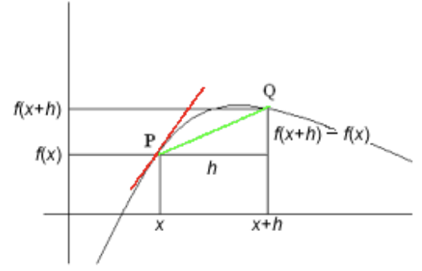
1.3 미분 규칙
| 규칙 | 공식 |
|---|---|
| 상수 | \(\dfrac{d}{dx}[c] = 0\) |
| 거듭제곱 | \(\dfrac{d}{dx}[x^n] = nx^{n-1}\) |
| 상수배 | \(\dfrac{d}{dx}[c\cdot f(x)] = c\cdot f'(x)\) |
| 합/차 | \(\dfrac{d}{dx}[f \pm g] = f' \pm g'\) |
| 곱 | \(\dfrac{d}{dx}[f\cdot g] = f'g + fg'\) |
| 몫 | \(\dfrac{d}{dx}\!\left[\dfrac{f}{g}\right] = \dfrac{f'g - fg'}{g^2},\; g \neq 0\) |
| 로그 | \(\dfrac{d}{dx}[\ln x] = \dfrac{1}{x}\), \(\;\dfrac{d}{dx}[\log_a x] = \dfrac{1}{x\ln a}\) |
| 지수 | \(\dfrac{d}{dx}[e^x] = e^x\), \(\;\dfrac{d}{dx}[a^x] = a^x \ln a\) |
| 체인룰 | \(\dfrac{d}{dx}[f(g(x))] = f'(g(x))\cdot g'(x)\) |
\(f(x) = 2\sqrt{x}\)를 미분하시오.
\[f'(x) = 2 \cdot \frac{1}{2} x^{1/2-1} = x^{-1/2} = \frac{1}{\sqrt{x}}\]
\(f(x) = 2\sqrt{3x^2 - 1}\)을 미분하시오.
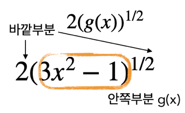
바깥 함수를 미분하고, 안쪽 함수를 그대로 유지한 뒤, 안쪽 함수를 미분하여 곱한다.
\[f'(x) = 2 \cdot \frac{1}{2}(3x^2-1)^{-1/2} \cdot 6x = \frac{6x}{\sqrt{3x^2-1}}\]
\(f(x) = \ln(x^2 - 1)\)을 미분하시오.
\[f'(x) = \frac{1}{x^2-1} \cdot 2x = \frac{2x}{x^2-1}\]
import sympy as sp
x = sp.Symbol('x')
f = 5*(x**2 - 2*x)**2
derivative = sp.diff(f, x)
print(derivative)1.4 미분 응용
1.4.1 최대·최소
함수 \(f(x)\)가 구간 \((a,b)\)에서 미분 가능하고 점 \(c\)에서 극값을 가지면:
\[f'(c) = 0\]
단, \(f'(c)=0\)은 극값의 필요조건이지 충분조건은 아니다 (변곡점일 수 있음).
증가·감소 판단
| 조건 | 판단 |
|---|---|
| \(f'(x) > 0\) | 구간 \(I\)에서 엄격히 증가 |
| \(f'(x) < 0\) | 구간 \(I\)에서 엄격히 감소 |
| \(f'(x) = 0\) | 극값 후보 (추가 검사 필요) |
오목성 (Concavity)
| 조건 | 의미 | 형태 |
|---|---|---|
| \(f''(x) > 0\) | Concave up (위로 볼록) | ∪ |
| \(f''(x) < 0\) | Concave down (아래로 볼록) | ∩ |
| \(f''(x)\) 부호 변화 | 변곡점 | 오목성 전환점 |
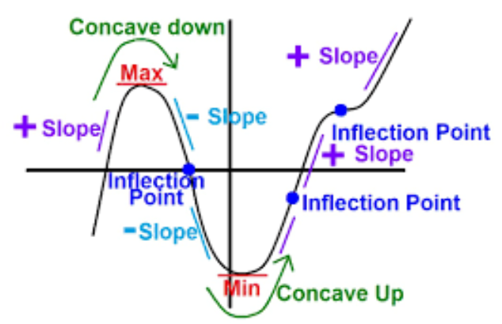
\(f'(c) = 0\)일 때:
- \(f''(c) > 0\) → \(x=c\)에서 극솟값
- \(f''(c) < 0\) → \(x=c\)에서 극댓값
- \(f''(c) = 0\) → 판정 불가 (고차 미분 또는 부호 변화 확인)
1.4.2 통계학 응용: OLS 추정
단순 회귀모형
\[y_i = \beta_0 + \beta_1 x_i + \varepsilon_i, \quad i=1,2,\ldots,n\]
잔차제곱합 \(S(\beta_0, \beta_1) = \sum_{i=1}^{n}(y_i - \beta_0 - \beta_1 x_i)^2\)을 최소화한다.
정규방정식 (편미분 = 0)
\[\frac{\partial S}{\partial \beta_0} = -2\sum_{i=1}^{n}(y_i - \beta_0 - \beta_1 x_i) = 0\]
\[\frac{\partial S}{\partial \beta_1} = -2\sum_{i=1}^{n}x_i(y_i - \beta_0 - \beta_1 x_i) = 0\]
OLS 추정치
\[\hat{\beta}_1 = \frac{\sum_{i=1}^{n}(x_i - \bar{x})(y_i - \bar{y})}{\sum_{i=1}^{n}(x_i - \bar{x})^2} = \frac{\text{Cov}(x,y)}{\text{Var}(x)}, \qquad \hat{\beta}_0 = \bar{y} - \hat{\beta}_1\bar{x}\]
import numpy as np
import matplotlib.pyplot as plt
from scipy.optimize import curve_fit
np.random.seed(0)
x_data = np.linspace(-5, 5, 20)
y_data = 2*x_data**3 - 3*x_data**2 + 4*x_data + 10 + np.random.normal(0, 10, 20)
def linear(x, a, b): return a*x + b
def quadratic(x, a, b, c): return a*x**2 + b*x + c
def cubic(x, a, b, c, d): return a*x**3 + b*x**2 + c*x + d
params_l, _ = curve_fit(linear, x_data, y_data)
params_q, _ = curve_fit(quadratic, x_data, y_data)
params_c, _ = curve_fit(cubic, x_data, y_data)
rss_l = np.sum((y_data - linear(x_data, *params_l))**2)
rss_q = np.sum((y_data - quadratic(x_data, *params_q))**2)
rss_c = np.sum((y_data - cubic(x_data, *params_c))**2)
plt.figure(figsize=(10, 6))
plt.scatter(x_data, y_data, label='data', color='black')
plt.plot(x_data, linear(x_data, *params_l),
label=f'Linear (RSS={rss_l:.1f})', color='blue')
plt.plot(x_data, quadratic(x_data, *params_q),
label=f'Quadratic (RSS={rss_q:.1f})', color='green')
plt.plot(x_data, cubic(x_data, *params_c),
label=f'Cubic (RSS={rss_c:.1f})', color='red')
plt.title('Curve Fitting by OLS')
plt.xlabel('x'); plt.ylabel('y')
plt.legend(); plt.grid(); plt.show()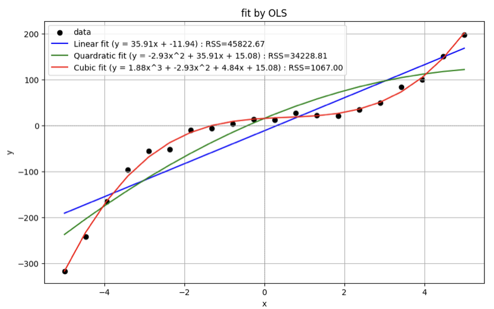
1.4.3 한계효용체감의 법칙
한계효용(marginal utility)은 재화 1단위 추가 소비 시 증가하는 총효용의 변화분이다. 인간은 가장 시급한 욕구부터 충족하는 특성 때문에, 소비량이 늘수록 한계효용은 감소한다.
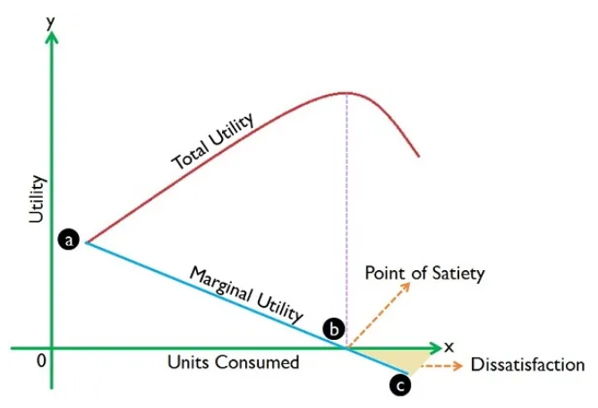
| 개념 | 설명 |
|---|---|
| 총효용 (Total Utility) | 특정 기간 동안 소비로 얻은 총 만족도 |
| 한계효용 (Marginal Utility) | 마지막 1단위 추가 소비로 인한 총효용의 변화 |
| 포화점 (Satiety Point) | 한계효용 = 0인 지점; 총효용이 최대 |
| 한계효용 음수 구간 | 포화점 이후 추가 소비 시 총효용 감소 |
1.4.4 Cobb-Douglas 생산함수
\[Q = f(K, L) = A L^{\alpha} K^{\beta}\]
\(Q\): 생산량, \(K\): 자본, \(L\): 노동, \(A, \alpha, \beta\): 모수
양변에 로그를 취하면:
\[\ln Q = \ln A + \alpha \ln L + \beta \ln K\]
- \(\dfrac{\partial \ln Q}{\partial L} = \alpha\): 노동의 생산탄력성 (한계 노동 생산량)
- \(\dfrac{\partial \ln Q}{\partial K} = \beta\): 자본의 생산탄력성 (한계 자본 생산량)
2 적분
고대 수학자들은 직선 도형의 면적은 쉽게 계산했지만, 곡선 아래의 면적은 큰 도전이었다. 아르키메데스는 곡선을 작은 직사각형으로 분할하여 근사하는 방법을 처음 탐구했다. 이후 뉴턴과 라이프니츠가 미적분학의 기본정리를 정립하면서 미분과 적분이 서로 역연산 관계임을 밝혔다.
통계학에서 적분은 확률 계산, 기댓값, 분산, 베이지안 추론의 기초이며, 머신러닝과 데이터 분석 실무에서도 광범위하게 활용된다.
2.1 부정적분 (Indefinite Integral)
\(F'(x) = f(x)\)를 만족하는 \(F(x)\)를 \(f(x)\)의 원시함수(anti-derivative) 또는 부정적분이라 한다.
\[\int f(x)\,dx = F(x) + C\]
\(C\)는 적분상수이며, 임의의 상수를 가질 수 있다.
미적분학의 기본정리
적분과 미분은 역연산이다.
\[F(x) = \int_a^x f(t)\,dt \implies \frac{d}{dx}F(x) = f(x)\]
2.2 정적분 (Definite Integral)
2.2.1 정적분의 개념
구간 \([a, b]\)를 \(n\)등분하여 각 소구간에서 직사각형 면적을 합산한 리만합(Riemann sum)의 극한이 정적분이다.
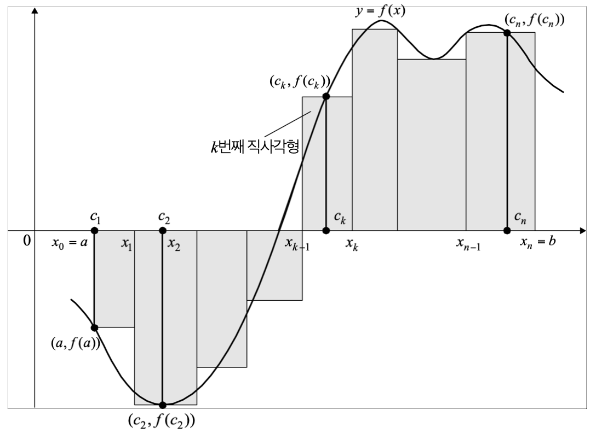
\[\int_a^b f(x)\,dx = \lim_{n \to \infty} \sum_{i=1}^{n} f(x_i^*)\,\Delta x\]
2.2.2 뉴턴-라이프니츠 정리
\(f(x)\)가 \([a,b]\)에서 연속이고 \(F'(x) = f(x)\)이면:
\[\int_a^b f(x)\,dx = F(b) - F(a) = \Big[F(x)\Big]_a^b\]
2.2.3 정적분 규칙
| 규칙 | 공식 | 비고 |
|---|---|---|
| 점 적분 | \(\int_a^a f(x)\,dx = 0\) | 연속 확률변수에서 점 확률 = 0 |
| 구간 반전 | \(\int_a^b f\,dx = -\int_b^a f\,dx\) | 방향을 바꾸면 부호 반전 |
| 상수배 | \(\int_a^b c\cdot f\,dx = c\int_a^b f\,dx\) | 상수는 밖으로 꺼냄 |
| 합/차 | \(\int_a^b (f \pm g)\,dx = \int_a^b f\,dx \pm \int_a^b g\,dx\) | 분배법칙 |
| 구간 분할 | \(\int_a^b f\,dx = \int_a^c f\,dx + \int_c^b f\,dx\) | 구간을 나눠 계산 |
| 비음수 함수 | \(f(x) \geq 0 \implies \int_a^b f\,dx \geq 0\) | 확률은 항상 ≥ 0 |
| PDF 조건 | \(\int_{-\infty}^{\infty} f(x)\,dx = 1\) | 확률의 총합 = 1 |
주요 함수의 적분 공식
| 함수 | 적분 |
|---|---|
| \(x^n\; (n \neq -1)\) | \(\dfrac{x^{n+1}}{n+1} + C\) |
| \(\dfrac{1}{x}\) | \(\ln|x| + C\) |
| \(e^x\) | \(e^x + C\) |
| \(a^x\) | \(\dfrac{a^x}{\ln a} + C\) |
| \(\ln x\) | \(x\ln x - x + C\) |
| \(\log_a x\) | \(\dfrac{x\ln x - x}{\ln a} + C\) |
치환적분 (Substitution)
\(u = g(x)\)으로 치환하면 \(du = g'(x)\,dx\):
\[\int f(g(x))\cdot g'(x)\,dx = \int f(u)\,du\]
\(\displaystyle\int x\,e^{x^2}dx\)를 구하시오.
\(u = x^2\)으로 치환 → \(du = 2x\,dx\) → \(x\,dx = \dfrac{1}{2}du\)
\[\int x\,e^{x^2}dx = \int e^u \cdot \frac{1}{2}\,du = \frac{1}{2}e^u + C = \frac{1}{2}e^{x^2} + C\]
부분적분 (Integration by Parts)
\[\int u\,dv = uv - \int v\,du\]
\(\displaystyle\int x e^x dx\)를 구하시오.
\(u = x\), \(dv = e^x dx\) → \(du = dx\), \(v = e^x\)
\[\int x e^x dx = xe^x - \int e^x dx = xe^x - e^x + C\]
\(\displaystyle\int_0^1 \left(x^2 + \sqrt{x}\right)dx\)를 구하시오.
\[F(x) = \frac{x^3}{3} + \frac{2}{3}x^{3/2}\]
\[\int_0^1 \left(x^2 + \sqrt{x}\right)dx = \Big[F(x)\Big]_0^1 = F(1) - F(0) = \frac{1}{3} + \frac{2}{3} = 1\]
# 부정적분
from sympy import *
x = Symbol('x')
integrate(x**2 + x**0.5, x)
# → x**3/3 + 0.667*x**1.5
# 정적분
from scipy.integrate import quad
quad(lambda x: x**2 + x**0.5, 0, 1)
# → (1.0, 1.11e-15) 첫 번째: 적분값, 두 번째: 수치 오차2.2.4 표 적분 (Tabular Integration)
부분적분을 반복 적용할 때 표로 정리하면 계산이 용이하다.
- \(u\): 미분하면 차수가 줄어드는 함수 (다항식 등)
- \(dv\): 반복 적분이 가능한 함수 (\(e^x\), \(\sin x\) 등)
\[\int u\,dv = (u)(v_1) - (u')(v_2) + (u'')(v_3) - \cdots \Big|_a^b\]
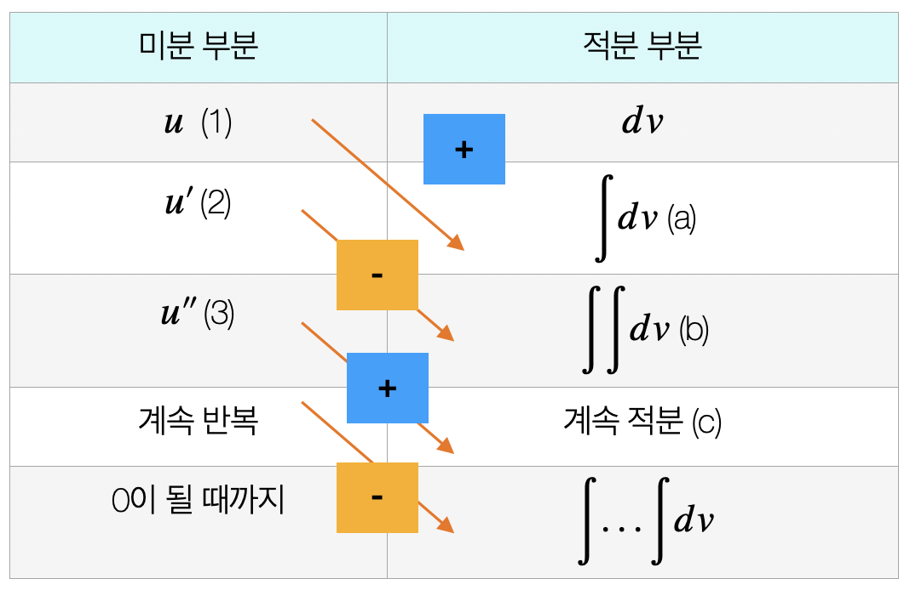
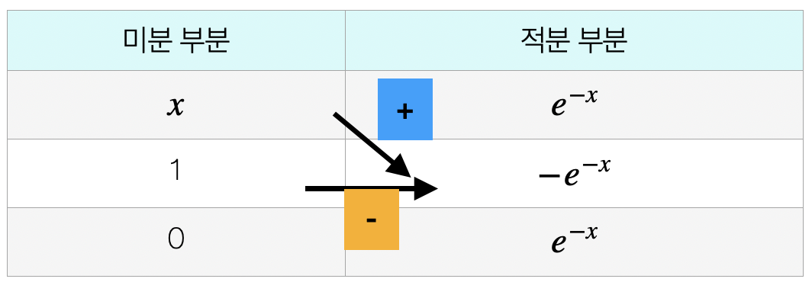
\[\Big[x(-e^{-x}) - (-e^{-x})\Big]_0^\infty = \Big[-xe^{-x} - e^{-x}\Big]_0^\infty = 0 - (-1) = 1\]
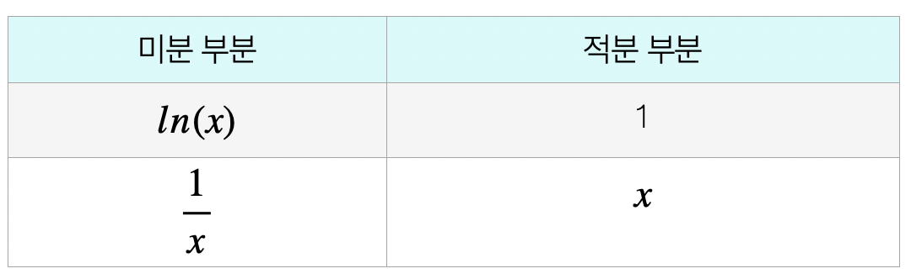
\[\Big[\ln(x)\cdot x\Big]_1^2 - \int_1^2 1\,dx = \left(2\ln 2 - \ln 1\right) - \Big[x\Big]_1^2 = 2\ln 2 - 1 \approx 0.386\]
2.3 적분 응용
연속형 확률분포
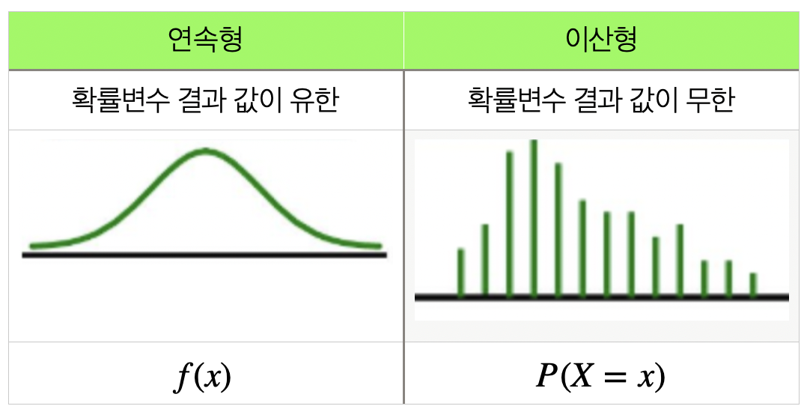
\[P(a \leq X \leq b) = \int_a^b f(x)\,dx, \qquad \int_{-\infty}^{\infty} f(x)\,dx = 1\]
\(P(-1 \leq Z \leq 1) = \displaystyle\int_{-1}^{1} \phi(z)\,dz\), 단 \(\phi(z) = \dfrac{1}{\sqrt{2\pi}}e^{-z^2/2}\)
from scipy.integrate import quad
import numpy as np
phi = lambda z: np.exp(-z**2/2) / np.sqrt(2*np.pi)
result, _ = quad(phi, -1, 1)
print(f"P(-1 ≤ Z ≤ 1) ≈ {result:.4f}") # → 0.6827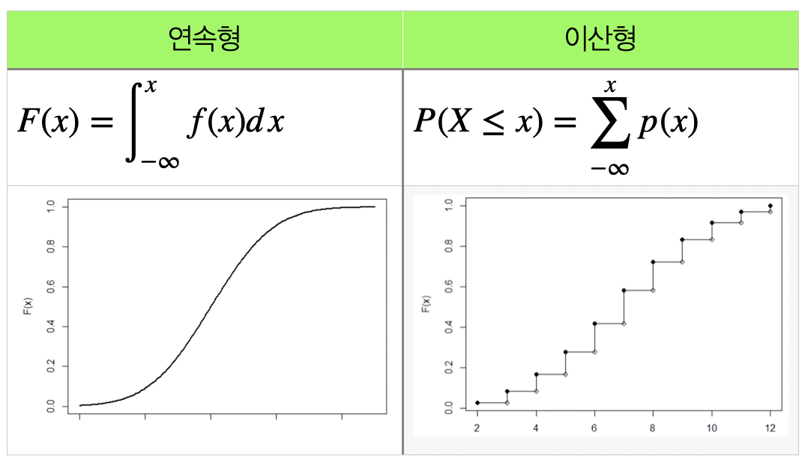
| 통계 개념 | 적분 표현 |
|---|---|
| 기댓값 | \(E(X) = \displaystyle\int_{-\infty}^{\infty} x\,f(x)\,dx\) |
| 분산 | \(\text{Var}(X) = \displaystyle\int_{-\infty}^{\infty} (x-\mu)^2 f(x)\,dx\) |
| CDF | \(F(x) = \displaystyle\int_{-\infty}^{x} f(t)\,dt\) |
| \(P\)번째 백분위 | \(F(x_P) = \displaystyle\int_{-\infty}^{x_P} f(x)\,dx = \dfrac{P}{100}\) |